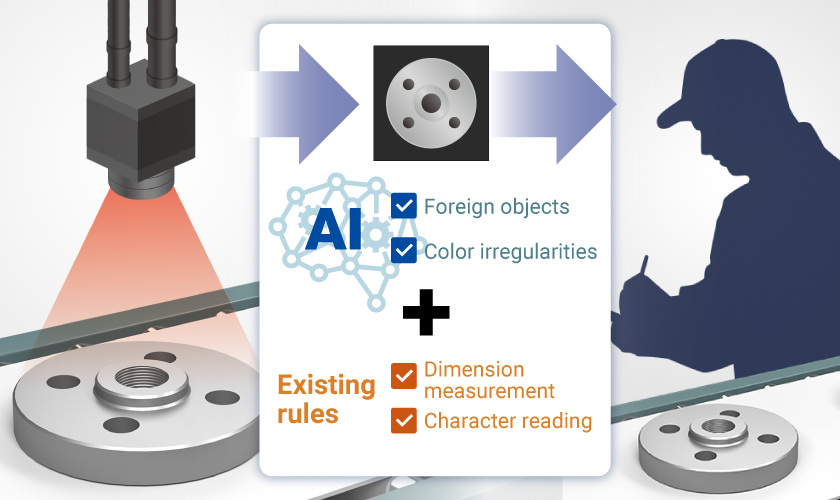
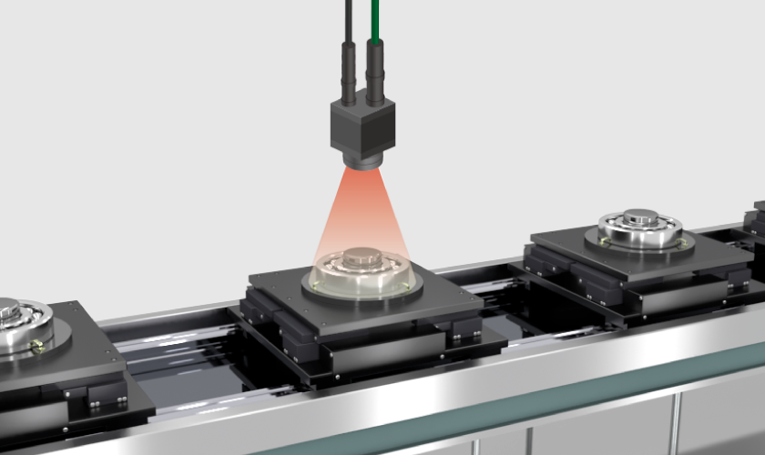
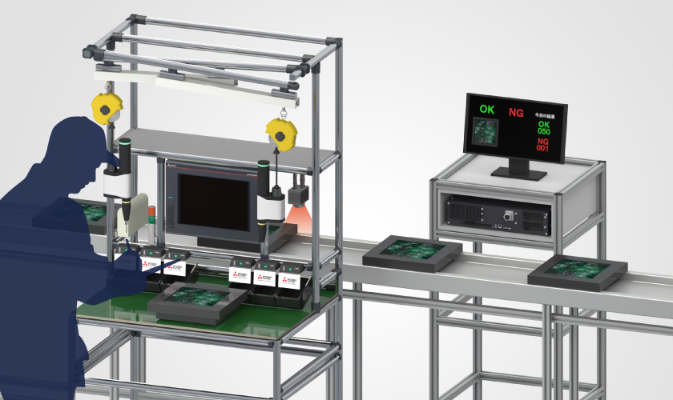

Katalog Produk
MELSOFT VIXIO

Contoh aplikasi MELSOFT VIXIO
Berikut ini beberapa contoh aplikasi MELSOFT VIXIO.
KASUS1
Kombinasi inspeksi berbasis aturan dan berbasis AI meningkatkan akurasi proses inspeksi
Sebelum
Pemeriksaan berbasis aturan saja
Bila pemeriksaan berbasis aturan diterapkan pada item yang aturannya sulit ditetapkan, banyak kesalahan deteksi yang terjadi.
Setelah
Kombinasi inspeksi berbasis aturan dan berbasis AI
Memperkenalkan inspeksi MELSOFT VIXIO AI dan menggunakannya bersama dengan inspeksi berbasis aturan yang ada akan meningkatkan akurasi inspeksi.
KASUS2
AI menggantikan pemeriksaan utama oleh mata manusia, mengurangi waktu dan menyamakan kualitas pemeriksaan
Sebelum
Penyortiran dengan mata manusia dan pemeriksaan terperinci terhadap produk yang cacat
Produk yang diidentifikasi sebagai “kemungkinan cacat” oleh mata manusia pada sortir awal juga harus diperiksa oleh orang yang bertanggung jawab atas jaminan kualitas, yang memerlukan kerja keras.
Setelah
Lakukan penyaringan primer dengan AI
Memeriksa produk yang diidentifikasi dalam penyaringan utama berdasarkan hasil penilaian AI (peta panas) mengurangi beban tugas.
KASUS3
Kurangi beban kerja inspektur dengan menggabungkan inspeksi manusia dan AI
Sebelum
Proses pemeriksaan visual (dengan mata manusia) oleh hanya satu orang
Satu orang yang bertugas melakukan inspeksi memeriksa semua produk secara visual, sehingga tidak ditemukan produk yang rusak karena beban kerja yang berat.
Setelah
Pemeriksaan ulang oleh AI dan mata manusia
Pengenalan pemeriksaan ganda mengurangi risiko terlewatnya produk yang rusak dan memastikan konsistensi kualitas antar operator.